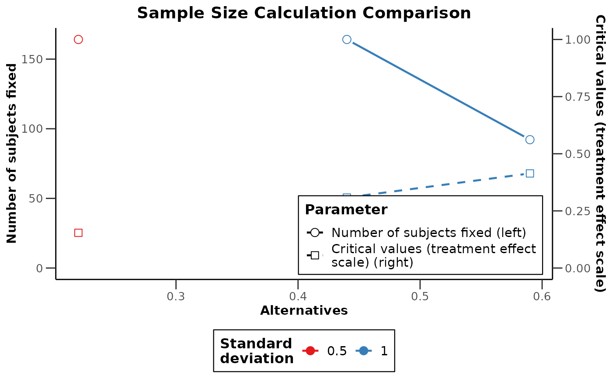
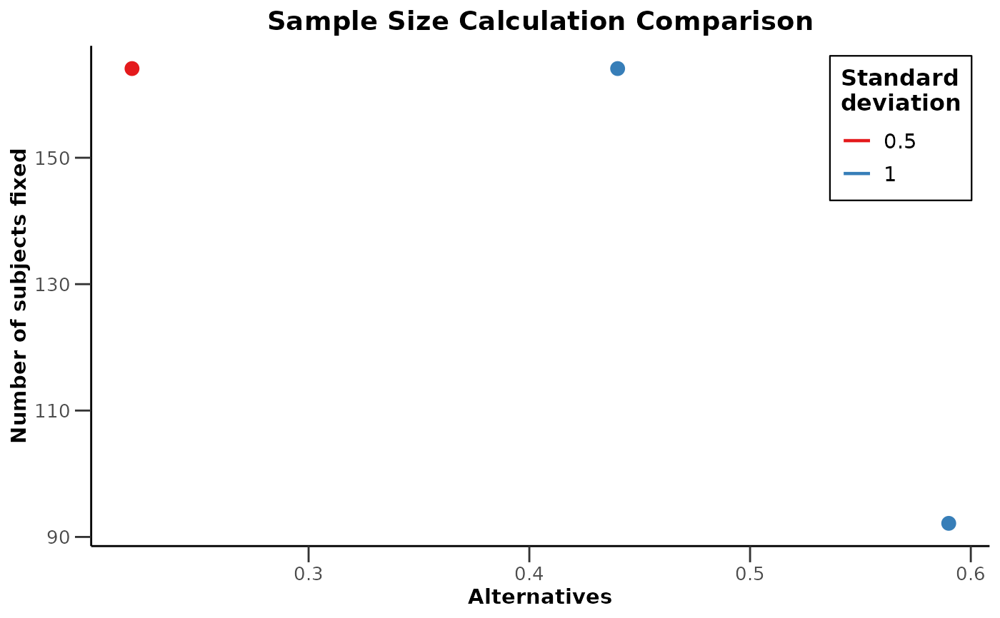

Plots selected variables from a trial comparison.
The summary method plots the objects contained in the comparison.
Usage
# S3 method for class 'TrialComparison'
plot(
x,
xAxis = NULL,
yAxis = NULL,
...,
data = NULL,
category = NULL,
group = NULL,
main = NULL,
xlab = NA_character_,
ylab = NA_character_
)
# S3 method for class 'TrialComparisonSummary'
plot(
x,
xAxis = NULL,
yAxis = NULL,
...,
showSummary = FALSE,
category = NULL,
group = NULL,
data = NULL
)Arguments
- x
A
TrialComparisonor its summary.- xAxis, yAxis
Optional axis column names or captions. Omitted axes are selected only when there is exactly one candidate: inputs/design settings are preferred for x, results for y, then other varying numeric columns. Identifier columns are excluded; stages remain eligible axes.
yAxismay also explicitly select multiple numeric parameters. Their axis sides can be controlled throughyAxisSidepassed toplot.TrialComparison().- ...
Arguments passed to
plot.TrialComparison(), including categories, grouping, titles and line/point settings. Explicit axis selections prevail.- data
Optional comparison data frame with additional annotation columns. Rows must follow the order of
as.data.frame(x). Without custom data, summary plots retain the summary's column-name harmonization setting.- category
Optional column names defining categories. Multiple columns define joint categories. NULL selects automatically; NA_character_ or character(0) disables categories.
- group
Optional column name defining an additional grouping.
- main
Plot title. When omitted, generated from the original objects. NULL or NA hides the title.
- xlab, ylab
Axis labels. NA uses automatic parameter captions; NULL hides the label.
ylaboverrides the primary y-axis label, including a single right-positioned axis. A secondary y axis retains its automatic caption.- showSummary
If TRUE, also print the summary before creating its plot.
Value
A ggplot object. Ambiguous selections raise an error listing candidate descriptions and a concrete example.
Details
xAxis, yAxis, category, and group accept technical column names,
captions from the parameter dictionary, and object-specific captions as in
fetch(). For example, "Alternative" and "Alternatives" both select
alternative. Names may also be unquoted, including inside c(...).
Defined variables and other expressions are evaluated in the calling environment.
Exact column names take precedence over captions. Other names must resolve
unambiguously to a column present in the comparison export; harmonized names
are taken into account. With fixed plans alone, "Number of subjects" can
select nFixed. Unknown names, ambiguous captions and duplicate selections
(including two aliases for one column) raise selection errors.
Examples
comparison <- getSampleSizeMeans(alternative = 0.22, stDev = 0.5) |>
compare(getSampleSizeMeans(alternative = 0.44, stDev = 1)) |>
compare(getSampleSizeMeans(alternative = 0.59, stDev = 1))
plot(comparison,
xAxis = "Alternative",
yAxis = c("Number of subjects", "Critical values (treatment effect scale)"),
category = "Standard deviation"
)

plot(comparison, xAxis = alternative, yAxis = numberOfSubjects, group = stDev)
#> `geom_line()`: Each group consists of only one observation.
#> ℹ Do you need to adjust the group aesthetic?
